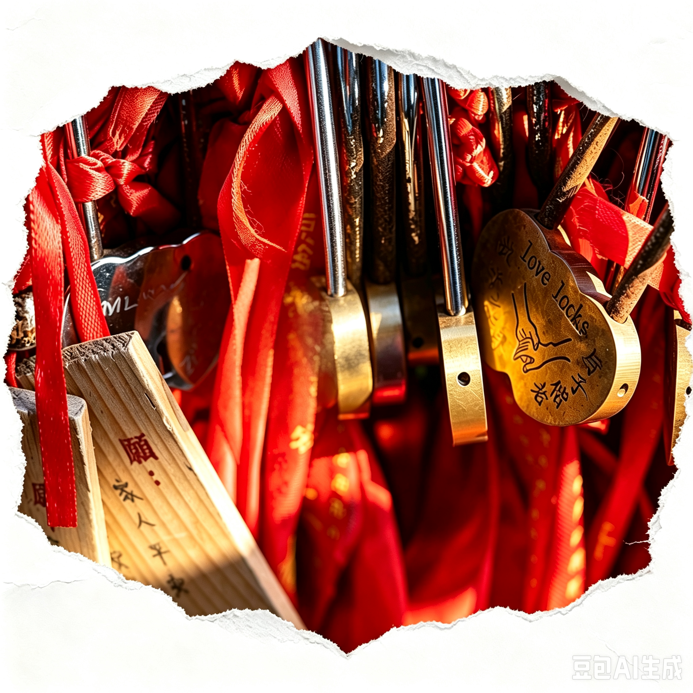

同心锁场景修改与网页交互实现方案
用于下一轮绘画模型修改和 Three.js 网页开发。绘画模型只负责场景图与静态视觉，动态文字、确认状态、旋转、飞入飞回和关锁动画由网页端实时完成。
一 资源地址
{kind=link}
3D 模型文件
网页端使用的 GLB：
concentric_lock_copper_gold.glb
可编辑 Blender 文件：
concentric_lock_copper_gold.blend
源模型：

二 绘画修改目标
新图的任务是把现有同心锁放入“豆包1”的婚恋祈愿场景中，形成一张干净、真实、适合网页首屏使用的场景参考图。锁体应是明亮且饱和的黄金色，暗部仍然是深金色或橙金色，不得变成暗棕、咖啡色、旧铜色或灰黑色。
| 部分 | 必须保留 | 必须避免 |
|---|---|---|
| 锁体 | 同心轮廓、钥匙孔、细密纹理、细划痕、金属明暗层次 | 暗褐色、咖啡棕、脏斑、塑料感、奶油米白 |
| 锁梁 | 镜面银、高反射、红蓝白和暗色环境反射 | 改成金色、纯灰、塑料、低光泽 |
| 结构 | 锁体和锁梁是两个独立对象，锁梁保持默认开锁状态 | 合并网格、改变锁孔、改变锁梁弧度 |
| 文字 | 预留正面左右两个同心文字区域和背面文字区域 | 把固定中文或英文文字永久画死在 3D 模型上 |
| 场景 | 红色丝带、暖金光、婚恋祈愿氛围、真实金属质感 | 过暗、背景抢主体、锁体被遮挡、文字乱码 |
三 绘画模型主提示词
直接复制版本
如需强调“更亮黄金”
四 反向提示词
五 文字和双方确认规范
绘画阶段只保留干净的文字承载区域，所有实际姓名和誓词都由网页端动态生成。两侧同心区域分别绑定当前用户和牵线对象，背面区域用于用户自定义文字。
| 状态 | 姓名颜色 | 视觉含义 | 锁状态 |
|---|---|---|---|
| 未牵线 | 暖金 #D9A441 | 右侧为空或显示“等待牵线” | 开锁 |
| 等待确认 | 暖金 #D9A441 | 红娘已牵线，对方等待回应 | 开锁 |
| 已确认 | 豆沙柔粉 #C98291 | 确认缘分，温柔且低饱和 | 开锁，等待另一方 |
| 已拒绝 | 灰紫银灰 #8D8998 | 克制、疏离，不使用攻击性红色 | 保持开锁 |
| 双方确认 | 双方姓名变柔粉 | 双方完成确认 | 反向播放现有关锁动画 |
| 关系已锁定 | 柔粉文字 + 金色高光 | 锁梁插入并闭合 | 关闭 |
六 网页端实现方案
模型与环境
继续使用现有 GLB。网页端加载 concentric_lock_copper_gold.glb，通过 RoomEnvironment 和 PMREMGenerator 提供反射环境，使用 ACES 色调映射、暖色主光、冷色补光和半球光，避免高金属度锁体在网页中无高光时变黑。
编辑层
点击锁后，将模型移动到固定的全屏编辑容器中。使用 GSAP 或 Three.js 时间轴做贝塞尔弧线移动、放大和自转两圈；编辑完成后沿反向曲线飞回原位置。编辑层包含左侧姓名、右侧姓名、背面文字三个输入框，以及“插入同心锁”“取消”按钮。
动态文字
推荐使用 Canvas 生成透明文字纹理，再通过独立的透明贴字平面或 DecalGeometry 投射到锁体表面。动态文字不修改锁体 Base Color，不写入 GLB，不影响锁梁材质；用户输入时只重绘对应 CanvasTexture。
双方确认
红娘发起牵线后，另一侧显示牵线对象姓名。每一方只能修改自己的确认状态；确认变为豆沙柔粉，拒绝变为灰紫银灰。只有后端返回双方都是 confirmed 时，前端才关闭编辑层并反向播放现有 Lock_Open_Close 动画。
七 推荐数据结构
建议由后端保存确认状态和文字内容，前端只根据服务端返回状态改变名字颜色和播放动画，避免多设备登录或刷新页面时出现两边状态不一致。
八 绘画修改验收标准
- 锁体即使移开强光，也能看出明亮黄金基础色。
- 锁体红色倾向明显降低，不得呈现桃金、玫瑰金或红铜色。
- 锁梁仍为镜面银，并保留红、蓝、白、暗色环境反射。
- 锁体纹理细密均匀，不出现脏斑和大块噪声。
- 不得添加固定姓名、固定誓词、按钮、输入框或网页 UI。
- 锁体轮廓、钥匙孔、同心结构和锁梁弧度保持一致。
- 画面主体清晰，红色丝带只作背景氛围，不遮挡锁体。
九 给绘画模型的简短指令
请参考上传的“豆包1”场景图，重新绘制中心同心锁。重点把锁体调整为明亮、纯正、饱和的黄金色，减少红色和桃橙倾向；暗部保持深金色，保留细密纹理和细划痕。锁梁保持镜面银，并保留红蓝白丝带的真实反射。保持开锁状态、同心轮廓、钥匙孔和锁梁结构。为正面左右两侧和背面预留干净平整的动态文字区域。不要生成固定姓名、固定文字、Logo、按钮、输入框或网页界面。整体使用红色婚恋丝带背景、暖金主光、柔和补光和轻微冷色边缘光，主体清晰、真实、高级、适合网页 3D 同心锁视觉参考。